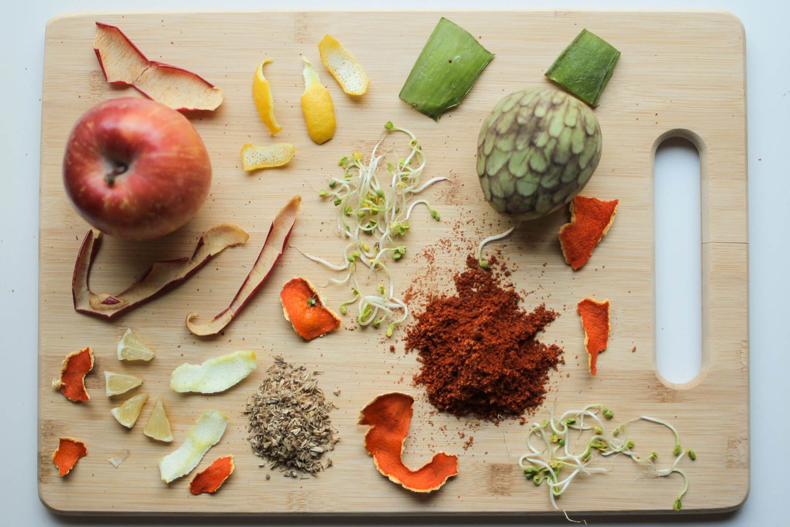
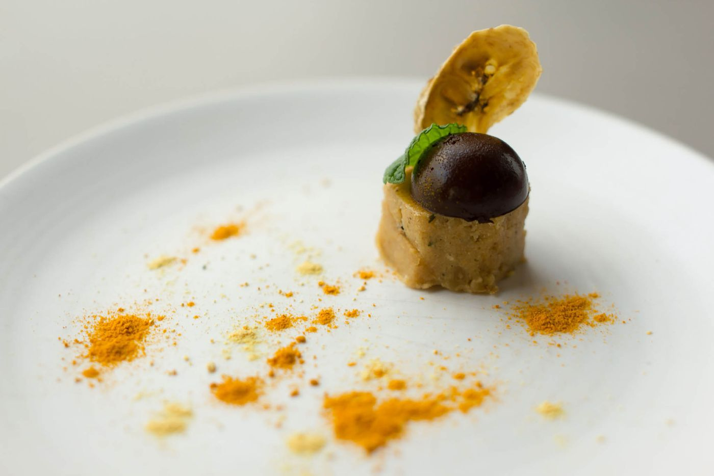
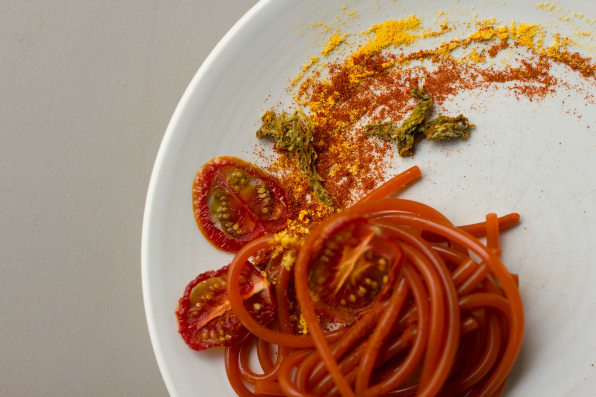
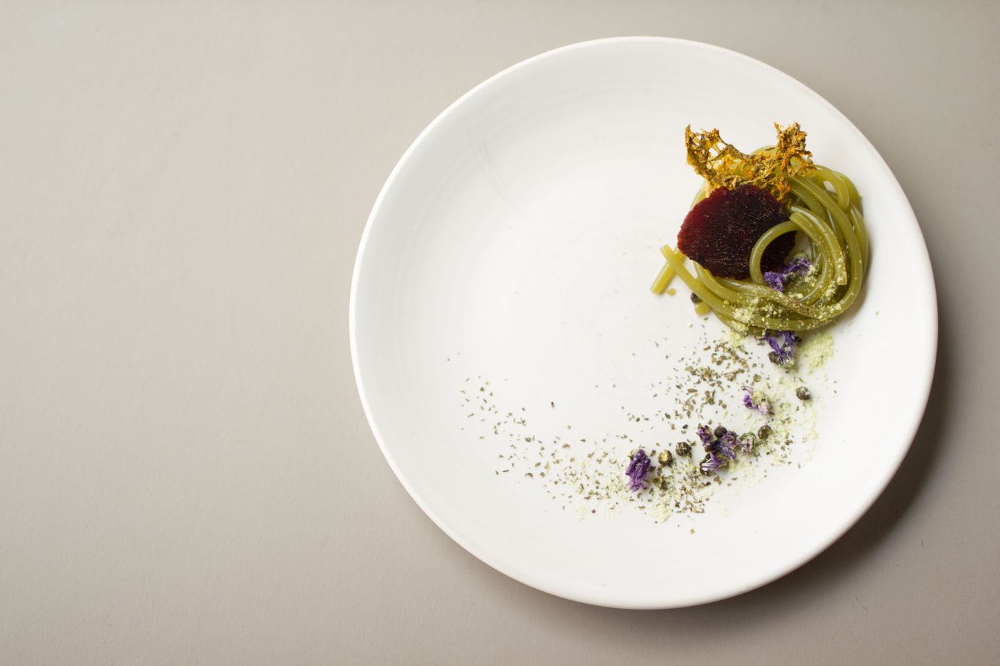
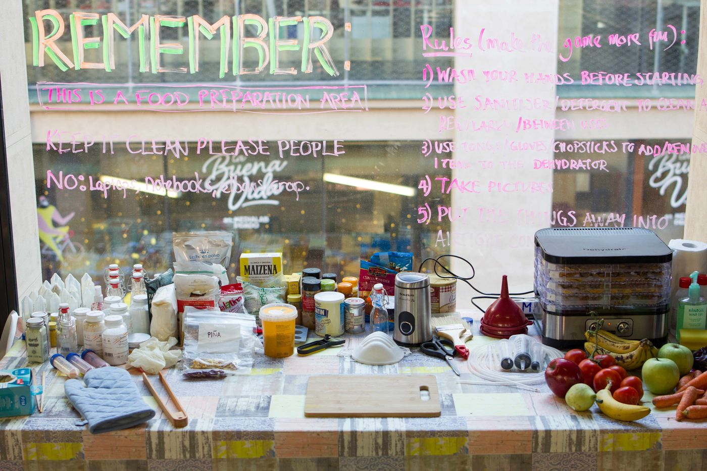
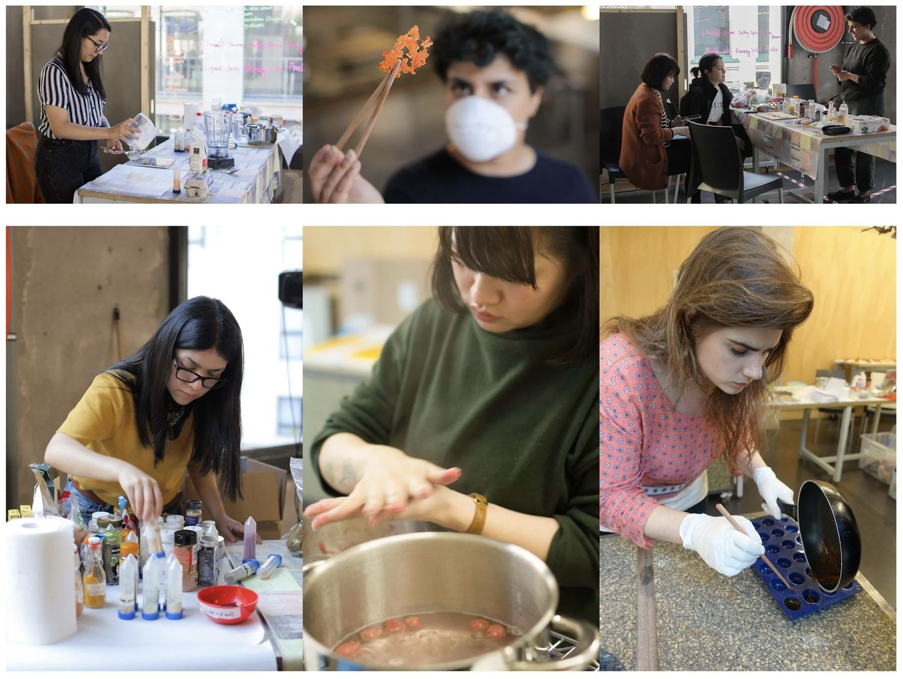
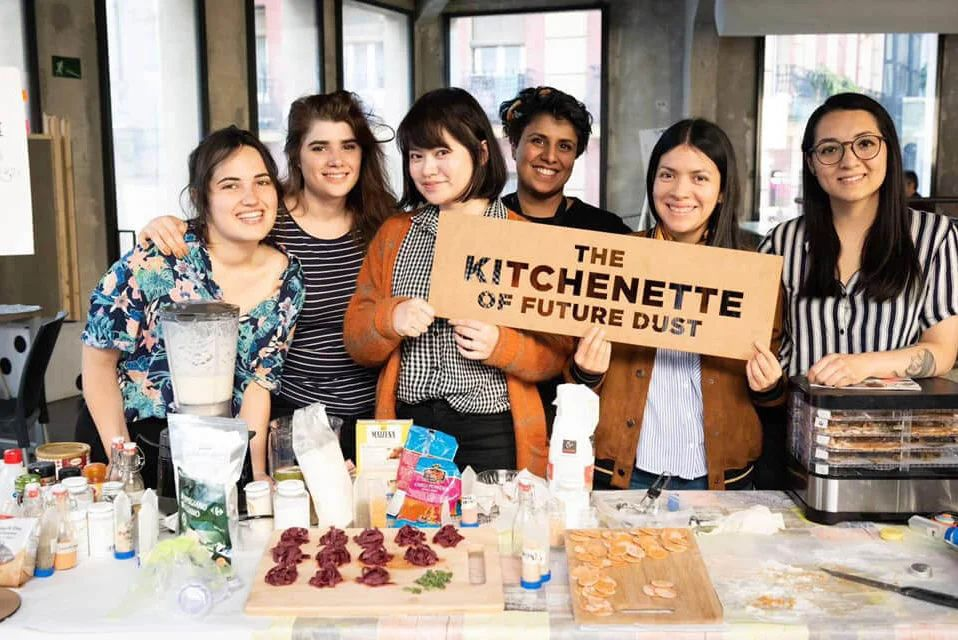

As the dining and food culture is the reflection of regions, from weather to geographic location, and the life values to the social atmosphere, they all show on the meals you put on dinner plates. The notion of the project is to design and create a powdery food system by applying the dehydrated technique to deform the nutritious kitchen waste, such as shrimp shells and fruit peels, into food powder.
By creating and developing a powdery food system, provides an option to individuals from different cultural backgrounds to deform the almost-expired food into the materials for tomorrow’s dinner in their own kitchen, using their imagination to creatively reform the food appearance and arrange the taste of combinations by surprise. The powdery form itself is flexible as a type of creative material for cooking and inspires individuals from various cultural backgrounds to reevaluate the current methodology of dining and eating, to develop an innovative way of eating for the future generation.





